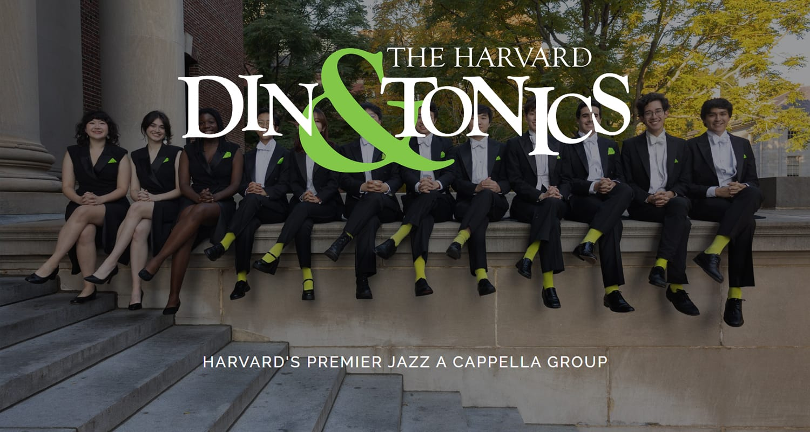

미국의 하버드 대학 아카펠라 그룹인 Harvard Din & Tonics 에 소속된 한국인 Elio Kennedy Yoon(이하 엘리오 윤)이 아이돌급의 인기를 끌고 있어 화제입니다.
Copacabana - Harvard Din & Tonics
이 영상에서 엘리오 윤은 Barry Manilow가 1978년도에 발표한 Copacabana 의 솔로를 맡아 중성적인 모습과 목소리톤, 멋진 무대 매너로 많은 사람들을 매료시켰습니다. 엘리오 윤은 한국인 아버지와 미국인 어머니의 혼혈로, 현재 Harvard 대학에서 신경과학을 전공하고 있다고 알려져 있으며, 그가 재학중인 Harvard 대학의 재즈 아카펠라 그룹 Harvard Din & Tonics 의 멤버로 프로듀서이자 솔로를 맡고 있습니다.
Harvard Din & Tonics 2024 월드투어
Harvard Din & Tonics 는 월드투어중이며 현재 싱가포르에서 공연중입니다.
Harvard Din & Tonics
Harvard Din & Tonics 의 자세한 소식은 아래에서 확인할 수 있습니다.
엘리오 윤의 뛰어난 음악적 재능과 전공에서의 앞으로의 행보가 기대가 됩니다.
#아카펠라 #엘리오 윤 #Harvard Din & Tonics